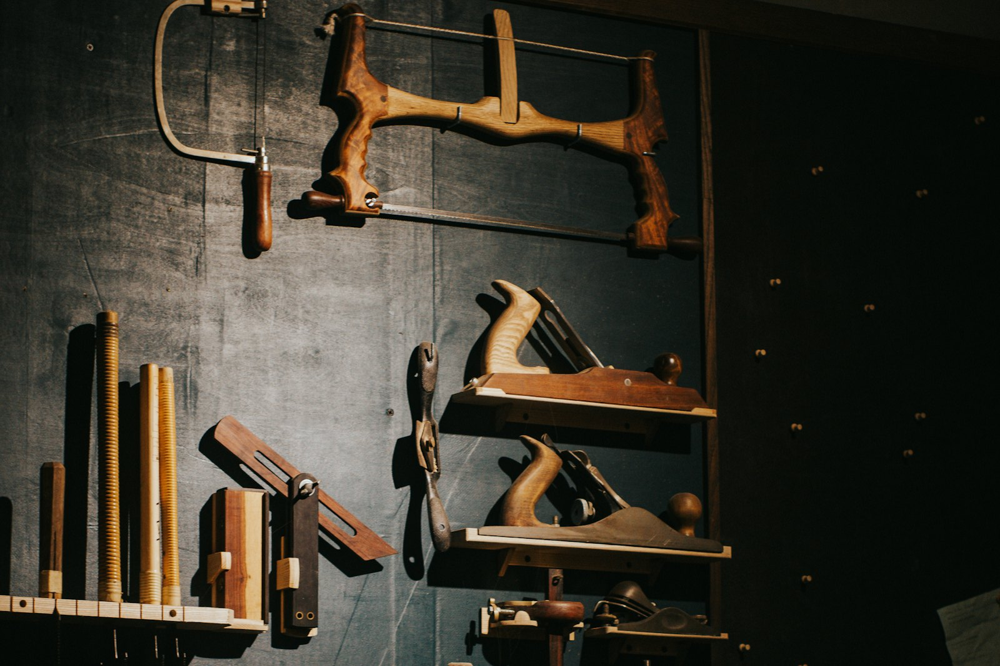
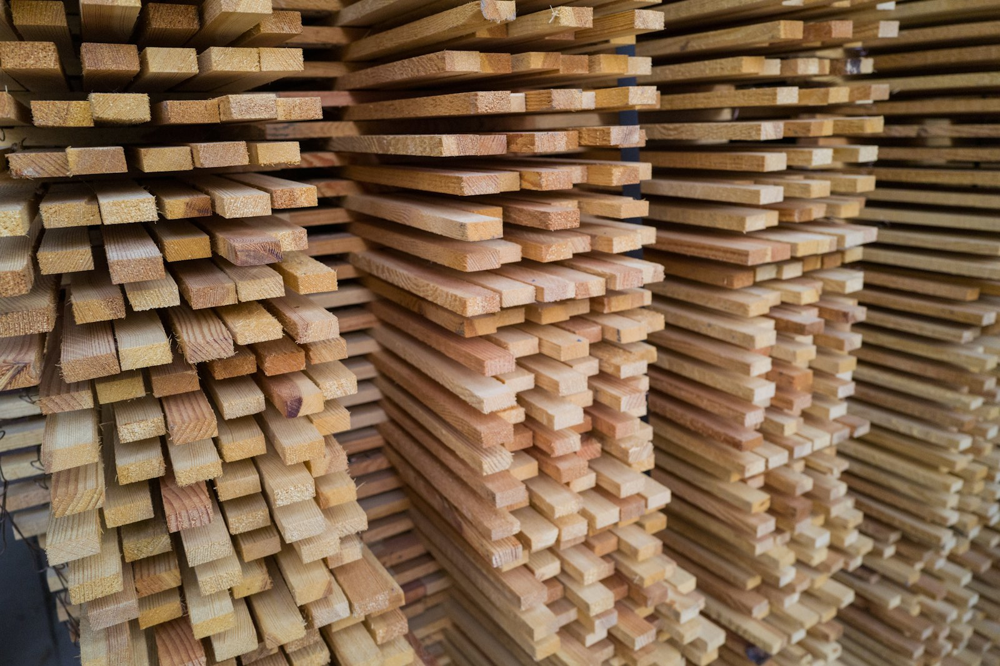
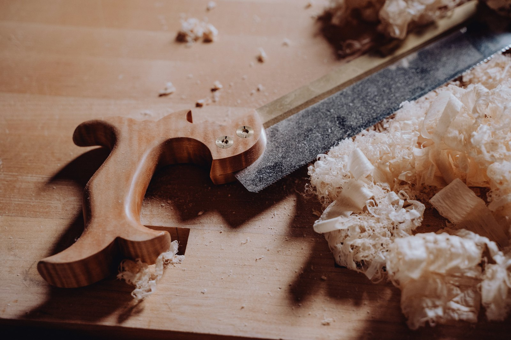
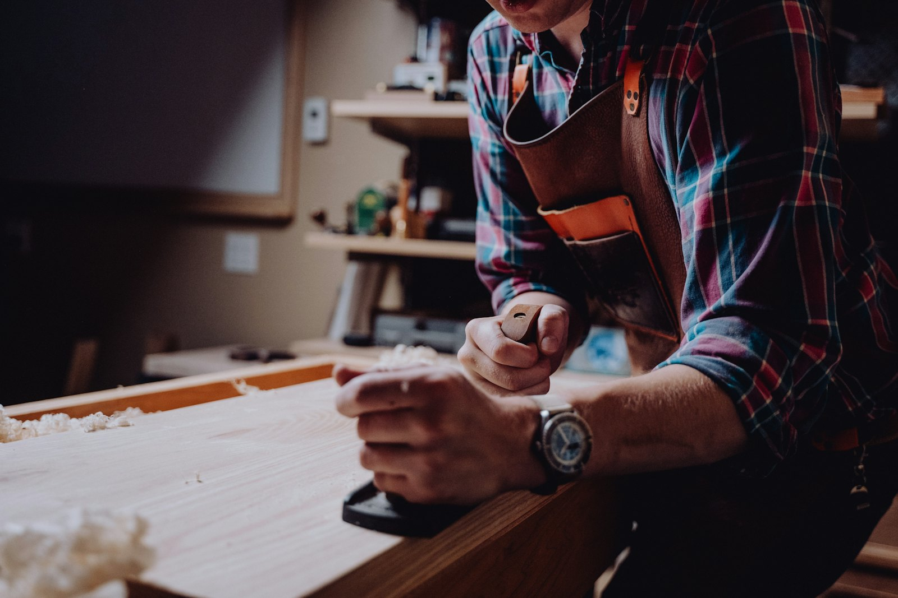

Möbel nach Maß.
Gezeichnet, gebaut, eingebaut.
Einbauschränke, Küchen, Türen und Treppen aus der eigenen Werkstatt in Konz. Vier Gesellen, ein Meister, kein Subunternehmer.
Angebot anfragenErst die Zeichnung, dann das Holz, dann das Foto. In dieser Reihenfolge entsteht ein Möbel, und in dieser Reihenfolge steht es auf dieser Seite.

Woran man einen Schreiner erkennt
Nicht an der Front, die sieht überall gleich aus. An der Verbindung dahinter. Drei, die wir von Hand oder auf der Fräse machen, je nachdem wo sie sitzt.
Zinken
Verkeilt sich gegen den Zug. Deshalb sitzt sie da, wo täglich gezogen wird. Hält ohne Schraube und ohne Leim, wenn es sein muss.
Zapfen
Nimmt die Last aus dem Rahmen auf und gibt sie ins Bein. Wo ein Rahmen sich verziehen könnte, sitzt ein Zapfen.
Grat
Wird eingeschoben und hält von selbst. Zieht das Holz beim Arbeiten zusammen statt es aufzureißen. Deshalb tragen so die Böden.
Was wir bauen
Aufmaß bei Ihnen, Zeichnung zum Freigeben, Bau in der Werkstatt, Montage. Ohne Subunternehmer.
Einbauschränke
Küchen
Türen und Fenster
Treppen und Böden

Der Riss rechnet mit
Schieben Sie die Maße, die Zeichnung ändert sich mit. Das Ergebnis ist ein Richtwert für diese Musterseite, das echte Angebot kommt nach dem Aufmaß.
Inklusive Aufmaß, Zeichnung und Montage. Lieferzeit sechs bis acht Wochen. Beispielwerte dieser Musterseite, zzgl. USt.
Vom Aufmaß bis zur Montage
Aufmaß
Wir kommen vorbei und messen. Dauert eine Stunde und kostet nichts.
Zeichnung
Sie bekommen einen Riss wie oben, mit Maßen und Festpreis. Erst wenn der passt, geht es weiter.
Werkstatt
Zuschnitt, Verbindungen, Oberfläche. Bei uns in Konz, nicht bei einem Zulieferer.
Montage
Ein bis zwei Tage bei Ihnen. Wir nehmen den Verschnitt wieder mit.

Werkstatt und Einzugsgebiet
Werkstatt und Ausstellung, Saarstraße 41, 54329 Konz. Anfahrt ohne Aufpreis in:
Darüber hinaus nach Absprache.
| Montag bis Donnerstag | 7 bis 17 Uhr |
| Freitag | 7 bis 14 Uhr |
| Samstag | nach Termin |
| Sonntag | geschlossen |

Rufen Sie an
Montag bis Freitag geht jemand ran, der auch sägt. Schneller als jedes Formular.